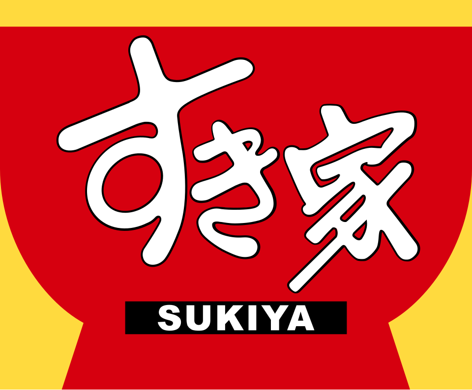

스키야 Sukiya
스키야(Sukiya)는 일본의 규동(소고기덮밥) 전문 체인점이다. 주식회사 젠쇼홀딩스의 자회사인 주식회사 스키야가 운영하며, 1982년 가나가와현 요코하마시에서 처음 문을 열었다.
최종 업데이트

스키야는 어떤 브랜드인가
스키야는 일본의 규동 전문 체인점으로, 주식회사 젠쇼홀딩스의 자회사인 주식회사 스키야가 운영하며 1982년에 처음 문을 열었다. 외식산업에서 매출액과 점포 수가 일본 내 1위이며, 일본 외식산업 최초로 주식 시가총액이 1조엔을 넘은 기업이라고 소개된다.
역 앞이나 번화가에 출점하는 종래의 규동점과 달리 자동차 이용객을 상정한 교외의 간선 도로변 점포를 주축으로 한다. 카운터석뿐 아니라 테이블석도 마련해 패밀리레스토랑처럼 가족 단위 손님을 상정한 형태이다.
2000년대 이후에는 드라이브스루 설치와 쇼핑센터 푸드코트 출점에 적극적이다. 치즈규동 등 규동에 토핑을 입힌 어레인지 규동을 최초로 출시한 규동 체인점이기도 하다.
스키야는 어떻게 시작되고 성장했나
1982년 7월 가나가와현 요코하마시에서 도시락점 '런치박스 나마무기점'을 연 것이 스키야의 시초이다. 같은 해 11월에는 요코하마시에 규동 업태의 1호점 '스키야 나마무기역 앞점'을 열었다.
창업자 Kentarō Ogawa는 규동 체인점 요시노야 출신으로 1978년부터 1982년까지 요시노야에 재직했다. 가게 이름은 널리 먹게 된 '스키야키'와 '좋아(스키)'를 곱해 지었으며, 창업 초기인 1983년에는 '스키야키 디너 세트' 메뉴도 취급했다.
2011년 5월 28일에는 태국 방콕의 쇼핑몰 '씨콘스퀘어'에 해외 1호점을 열었다.
스키야의 브랜드 아이덴티티는 무엇인가
교외 간선 도로변에서 가족 단위 손님을 겨냥한 점포 구성과, 치즈규동 같은 어레인지 규동을 처음 내놓은 점으로 다른 규동 체인과 구분된다.
스키야의 대표 제품과 서비스는 무엇인가
주력 메뉴는 규동이며, '치즈규동' 등 규동에 토핑을 입힌 어레인지 규동을 최초로 출시한 규동 체인점이다. 카레라이스와 각종 덮밥, 디저트 등 다양한 메뉴를 갖춘 것이 특징이다.
점포는 카운터석과 테이블석을 함께 두며, 교외형 점포를 주축으로 하면서 드라이브스루와 쇼핑센터 푸드코트에도 출점한다. 2023년 3월 기준으로 일본에 1,941개 점포가 있고, 해외에는 중국, 홍콩, 대만, 태국, 말레이시아, 인도네시아, 베트남, 필리핀, 싱가포르, 브라질, 멕시코 등에 총 670개 점포가 있다.
스키야는 지금 어떤 상태인가
2020년 3월 31일 중간 지주회사였던 주식회사 스키야 본부가 지역 자회사 9개사를 합병해 사업회사화하고 주식회사 스키야로 상호를 변경했다. 주식회사 스키야는 젠쇼홀딩스가 100% 출자한 자회사이다.
해외 점포가 가장 많은 나라는 중국으로 460개 점포이다. 모회사 젠쇼홀딩스는 2023년 9월 말 기준 그룹의 해외 점포 수가 6,166개이며, 2024년 3월 말까지 1만개 규모로 확대할 예정이라고 밝혔다.
스키야 로고는 어떻게 변해왔나
자주 묻는 질문
스키야는 어느 나라 브랜드인가요?
스키야는 일본의 식음료 브랜드입니다.
스키야는 언제 설립되었나요?
스키야는 1982년 설립되었습니다.
스키야의 브랜드 아이덴티티는 무엇인가요?
교외 간선 도로변에서 가족 단위 손님을 겨냥한 점포 구성과, 치즈규동 같은 어레인지 규동을 처음 내놓은 점으로 다른 규동 체인과 구분된다.
스키야의 대표 제품은 무엇인가요?
주력 메뉴는 규동이며, '치즈규동' 등 규동에 토핑을 입힌 어레인지 규동을 최초로 출시한 규동 체인점이다.
스키야는 어느 기업이 소유하고 있나요?
2020년 3월 31일 중간 지주회사였던 주식회사 스키야 본부가 지역 자회사 9개사를 합병해 사업회사화하고 주식회사 스키야로 상호를 변경했다.
스키야의 창업자는 누구인가요?
스키야의 창업자는 Kentarō Ogawa입니다(위키데이터 기준).
스키야의 본사는 어디에 있나요?
스키야의 본사는 고난에 있습니다(위키데이터 기준).
출처와 검증
스키야 관련 참고: 공식 웹사이트 · 위키데이터 Q6137375 · 한국어 위키백과 · 영어 위키백과. 브랜드명은 한글과 원어를 함께 표기하되 데이터에 없는 표기는 만들지 않습니다. 기원 국가·설립연도는 검수된 정의문에서 확인된 값을 우선하고, 없을 때만 공식 웹사이트 URL이 일치하는 위키데이터 개체의 값을 씁니다. 웹 첫 보관은 인터넷 아카이브가 공식 사이트 첫 화면을 처음 보관한 날로, 사이트 개설일과 다를 수 있습니다. 위키데이터 값은 2026-11-06 기준입니다.